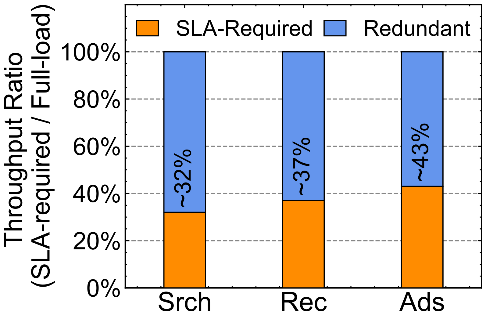
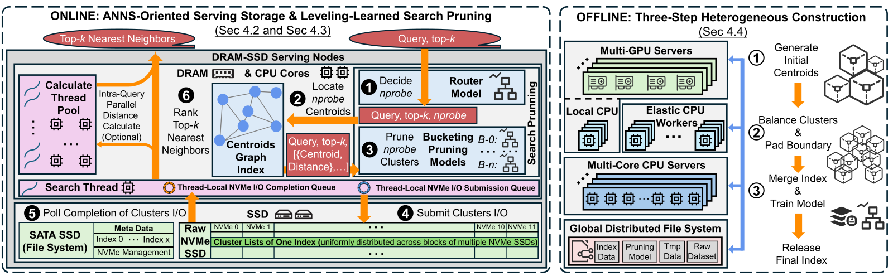
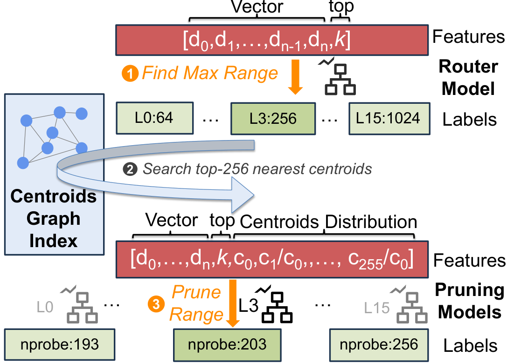
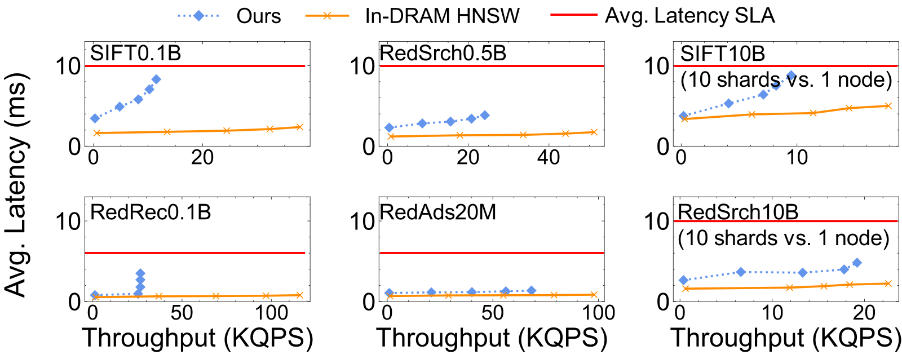

目录 · 10 节
1它到底在解决什么问题？2为什么不用 SSD 上的图索引3先看全景4存储栈：绕过内核直接驱动 SSD5按 query 学出探查范围6建索引：GPU 粗聚类加弹性 CPU7效果怎么样8我认为它的局限9一个基础设施团队可以怎么试10结论与评价维护大规模内存向量检索、DRAM 账单越来越重的基础设施团队，值得细读这篇。这篇论文来自小红书和华东师大、上海交大，写的是一套已经在生产上线的系统。它的核心结论一句话：在召回阶段 top-k 动辄上千的业务里，SSD 上的图索引注定慢，因为每一步都要等上一步的读结果；而聚类索引一次性发出一批互不依赖的读请求，配上 12 块 PCIe Gen5 SSD，可以接近内存方案的性能。在作者自己的业务数据上，单台 96 核服务器在满足延迟 SLA（服务等级约定的延迟上限）的前提下，能做到同机内存 HNSW 吞吐的 25% 到 70%；在 100 亿规模上，用一台机器达到 10 分片内存部署吞吐的 47% 到 85%，DRAM 少了将近 10 倍。生产上约 40 台全闪存服务器替换了原来约 35,000 个 CPU 核、0.35 PB（约 35 万 GB）DRAM 的内存集群。要注意，它的“性价比”只算了内存和 SSD 的价格，而且收益最大的前提是 top-k 大、召回率目标约 90%。
它到底在解决什么问题？
小红书的搜索、推荐、广告都依赖 ANNS（近似最近邻检索）：把 query 和内容都变成向量，在几千亿个向量里找出最近的若干个。实时业务的平均延迟要求是 5 到 10 毫秒，搜索高峰约 30 万 QPS，推荐可达约 250 万 QPS。为了稳住延迟，过去一直用全内存的 HNSW 图索引，到 2025 年仅这三类业务的索引就吃掉了 PB 级 DRAM，向量规模每年还在翻倍。
作者先算了一笔账：内存集群里真正被延迟 SLA 用到的吞吐只有一小部分，其余 DRAM 是为了“装得下”而买的。

另一方面，SSD 按容量算便宜得多，这正是作者想利用的。论文的价格表（2025 年 12 月）里，DRAM 约 8 美元/GB，Gen5 SSD 约 0.2 美元/GB，只有 2.5%；12 块 Gen5 SSD 的总带宽约为 12 通道 DDR5（当前服务器主流内存）的 32%。这意味着 SSD 带宽已经不算低、价格只有零头，所以问题就变成：能不能把索引放到 SSD 上，同时守住 5 到 10 毫秒的延迟？
为什么不用 SSD 上的图索引
业界常见的“内存 + SSD”方案是 DiskANN 及其改进版 Starling、PipeANN：内存里放压缩向量，原始向量和图的边放在 SSD 上，检索时沿着图一步步走向离 query 更近的点。小红书已经把 DiskANN 用在内容审核这类宽松的离线业务上，但在线业务不行。作者在 96 核、12 块 Gen5 SSD 的机器上用 SIFT（常用的公开向量检索数据集）一亿向量测试，目标召回率 90%、top-k 从 10 到 3000：DiskANN 和 Starling 的延迟始终达不到 SLA，延迟最低的 PipeANN 在满足 SLA 时吞吐也只有内存 HNSW 的 1/10 到 1/25，这说明问题不在某个实现，而在图索引本身。
原因在于读请求之间有依赖。下面是一个示意：
| 方式 | 一次 top-1000 检索要做的读 | 读之间的关系 | 后果 |
|---|---|---|---|
| SSD 上的图索引 | 候选队列长到约 1500，要走上千步 | 每一步要等上一步读回来才知道下一步去哪 | SSD 比 DRAM 慢 100 到 1000 倍的延迟被串行放大 |
| 聚类索引 | 先在内存里找出最近的若干个簇，再读这些簇 | 一次发出，互不依赖 | 可以靠更多 SSD 并行读来提高吞吐 |
聚类索引的代表是 SPANN（微软提出的内存加 SSD 聚类索引）：把向量聚成很多大小相近的簇，簇中心和簇中心之间的图放在内存里，每个簇的向量作为一段连续数据放在 SSD 上。检索时先在内存里找出最近的 nprobe 个簇中心，再把这些簇一次性读进来算距离。作者用 SPANN 在 12 块 Gen5 SSD 上测试，延迟已经接近 SLA，吞吐随 SSD 数几乎线性增长，12 块时约为 1 块的 12 倍。但它离替换内存 HNSW 还差三件事：吞吐只有 HNSW 的 12% 到 14%，SSD 带宽只用了 26% 到 59%；固定的剪枝规则对每个 query 要么多读、要么少读；单机纯 CPU 建索引，规模到百亿时要好几天。Helmsman 就是针对这三点分别改造的。
先看全景

每台服务节点配 12 块 2TB 的 PCIe Gen5 NVMe SSD、12 条 96GB DDR5 内存和一颗 96 核 CPU。内存里只放簇中心图和剪枝模型，簇数据按逻辑块分散在各块 SSD 上。下面分三部分看它改了什么。
存储栈：绕过内核直接驱动 SSD
聚类检索的 I/O 有两个特点。一是读请求多：top-3000 的一次检索可能要读约 1000 个簇。以 SIFT 一亿向量为例，10 毫秒的预算里，找簇中心、算距离、排序要花 2 到 4 毫秒，留给 I/O 的只有 6 到 8 毫秒，折算下来每个检索线程需要每秒 12 万到 17 万次读，而 SPANN 用的 I/O 栈通常只能做到 3 万到 4 万次。二是读的大小固定：为了控制长尾，簇被平衡到相近大小并补齐到同样长度，例如 SIFT 每个簇 12KB，正好是 3 个 4KB 页。
作者把 SPANN 的 I/O 路径拆开测量，发现传统内核 I/O 栈（系统调用、文件系统、块层、多盘 RAID（磁盘阵列）映射、NVMe 驱动）的开销最高占到端到端的 58%，比 SSD 本身的读取时间还长。换成 io_uring 有改善，但只有用户态驱动 SPDK 能达到所需的读次数。改用 SPDK 后，内核提供的文件和空间管理都没了，于是他们自己做了三件事：
- 数据布局：索引名、簇到 SSD 位置的映射、剪枝模型这些小数据仍存成普通文件，常驻内存；簇数据直接写在 SSD 的逻辑块上，每个簇占一块 SSD 上的一段连续块，读一个簇只需一条命令。
- I/O 提交：检索线程把一批读命令放进 NVMe 队列后，每块 SSD 只通知一次，省掉几百次逐条命令的 PCIe 往返，然后轮询完成队列。
- 空间分配：因为簇大小固定，用 64MB 一块的空闲链表统一管理所有索引的 SSD 空间，部署和删除索引都按块整体分配回收。
按 query 学出探查范围
nprobe（读多少个簇）同时决定召回率和成本。SPANN 的规则是：只读那些离 query 的距离不超过“最近簇距离 ×(1+ε)”的簇，ε 是人工定的固定值。作者统计了约 100 个 query，发现这条规则剪掉的簇很少，而且对单个 query 来说常常读多了或读少了，召回率波动很大。
学术界也有按 query 提前停止的方法，例如 Quake、LAET（一种学习提前终止的方法）、Auncel，但它们要边读边看中间结果再决定是否继续，这会把一批并行读拆成一次次串行读，正好破坏了聚类索引的优势。它们也大多假设 top-k 固定、目标召回率可变，而小红书的情况相反：目标召回率按业务定死（在线搜索为 90%），top-k 每个请求都不同，在 100 到 3000 之间。

于是作者设计了 LLSP（作者起的名字，即分级学习的检索剪枝），全部用 GBDT（梯度提升决策树）实现，训练只需分钟级，单次预测 10 到 30 微秒，模型只有几百 KB。关键是只用检索开始前就能拿到的信息做特征，不看任何中间结果，这样决定好 nprobe 之后仍可一次性发出整批读。
训练数据来自线上日志：搜索取前一天、推荐和广告取前一小时，均匀抽约 1% 的请求，因为短时间内的请求有大量重复。真实近邻用 nprobe=4096 的不剪枝检索近似得到。路由模型的标签是“能达到目标召回率的最小级别”，级别从 64 到 1024，每 64 一级。每个级别的剪枝模型的标签是：从该级别上限开始逐步减少 nprobe，直到召回率刚好降到门槛时的那个值。特征重要性分析显示，在小红书搜索数据上，路由模型 67% 的判断依据来自 query 向量、33% 来自 top-k；剪枝模型里簇中心距离分布占一半。
建索引：GPU 粗聚类加弹性 CPU
SPANN 建索引分三步：层次 k-means 把向量切成大小受限的簇，把边界向量复制到相邻簇，最后在簇中心上建图。第一步占总耗时的 60% 到 80%，而且原实现只能用一台机器的 CPU。Helmsman 把第一步改成用 GPU（基于 Faiss 的 k-means）做粗聚类，此时大多数簇已经小于 10 万个向量的上限；接着用 CPU 继续拆分过大的簇并复制边界向量。规模在 1 亿以下的推荐、广告索引直接用 GPU 服务器的本地 CPU 做；需要每天重建的大规模搜索索引则在夜间低峰期借用在线集群的空闲 CPU，在线流量来了就抢占并稍后重试，重试次数过多的任务换节点。最后在多核服务器上合并分片、建簇中心图、训练剪枝模型。
效果怎么样
下面的数字都在召回率 90% 下测得：
| 对比项 | 结果 | 这说明 |
|---|---|---|
| 与 SSD 上的其他方案比吞吐 | 高 2 到 16 倍，平均延迟保持在 10 毫秒内 | 大 top-k 下，SSD 图索引的瓶颈确实是串行读 |
| SSD 带宽利用率（小红书搜索 5 亿向量） | Gen4 约 85%、Gen5 约 70%；SPANN 在 Gen4 上约 55%，图索引多在 20% 左右或更低 | 绕过内核的批量 I/O 把带宽用起来了 |
| SSD 从 Gen4 升级到 Gen5 | 吞吐提高约 55%（64 维、128 维）到 87%（1024 维）；图索引只提高 10% 到 30% | 只有它能吃到新硬件的带宽红利 |
| 剪枝模块 | 吞吐比不剪枝高 1.1 到 1.6 倍，比固定规则高 5% 到 25%；固定规则下超过 40% 的 query 达不到目标召回率，LLSP 下超过 80% 的 query 能达到 | 按 query 定范围既省 I/O，又让召回更稳 |
| 与同机内存 HNSW 比（2000 万到 5 亿向量） | 吞吐为 HNSW 的 25% 到 70%，始终满足平均延迟 SLA | 同一台机器上它仍明显慢于全内存 |
| 100 亿向量 | 1 台 96 核、160 到 330GB DRAM 的机器，达到 10 分片 HNSW（320 核、2.5TB DRAM）吞吐的 47% 到 85% | CPU 少 3 到 4 倍，DRAM 少近 10 倍 |

成本表的口径值得留意。在 5 亿向量的搜索数据上，HNSW 用 123GB DRAM（约 1000 美元），吞吐 51 KQPS（千次查询每秒）；Helmsman 用 8GB DRAM 加 162GB SSD（共约 96 美元），吞吐 24 KQPS。所以“每美元吞吐”是 250 对 51，按表中数字是 4.9 倍（正文写的是 5.4 倍），但这里只算了内存和 SSD 的采购价，没有计入 CPU、整机和电费，而它的绝对吞吐不到 HNSW 的一半。在 100 亿规模上，同样口径下是 10 对 1.2，即 8.3 倍。建索引成本上，作者把一台 96 核纯 CPU 云主机每小时的价格记为 1：在 5 亿向量的搜索数据上，HNSW 用这样一台机器建 1.5 小时，成本记 1.5；Helmsman 用 96 核加 4 块 GPU 的机器（每小时 1.3）建 1.3 小时，成本记 1.7。所以 GPU 方案并没有更省钱，单机上也只快了一点；它真正的价值是让聚类这一步能做大规模：1 亿向量从单机 9 到 12 小时降到 1 小时以内，100 亿向量用 1 万个 CPU 核时从 16 小时以上降到 4 到 7 小时。
我认为它的局限
第一，优势依赖“大 top-k、约 90% 召回”这一工作点。作者明确说，召回阶段拿到 100 到 1000 个约 90% 准确的候选，比追求 98% 以上的召回更有业务价值。对 top-10、要求极高召回或延迟预算远低于 5 毫秒的场景，结论不能直接套用，因为同机对比里它的延迟本就高于 HNSW，吞吐也只有 HNSW 的四分之一到七成。
第二，成本对比的口径偏有利。每美元吞吐只算了存储介质价格，生产上真正省下的还包括 CPU 核数，但这部分在表里没有和整机成本一起算。在 100 亿规模的成本表里，Helmsman 的吞吐是 19 KQPS，10 分片 HNSW 是 23 KQPS。也就是说，8.3 倍的每美元吞吐主要来自 DRAM 从 2.5TB 降到 0.16TB，而不是它跑得更快。
第三，系统有明确的硬件天花板和运维短板。12 块 Gen5 SSD 理论约 140GB/s，实际只能用到约 70%，因为 DDR5 的有效带宽只有 300 到 350GB/s，要同时承担 SSD 写入内存、CPU 读内存和簇中心检索，作者试过 20 块 SSD，收益递减。突发 query 集中读同一批簇时会撞上 SSD 芯片内部的冲突，加冗余副本后吞吐上限也只提高 1.5 到 2 倍。更新方面，目前靠定期重建主索引、内存里另放一个小索引接新数据、用位图标记删除，额外占内存也增加重建成本。
一个基础设施团队可以怎么试
- 先测清楚自己的工作点：各业务的 top-k 分布、目标召回率、平均和 P99.9 延迟预算，以及内存集群里真正被 SLA 用到的吞吐比例。如果 top-k 普遍在几百以上、SLA 只用到三到四成吞吐，就有替换空间。
- 拿开源的 SPANN 或作者开源的原型，在一台多 SSD 机器上跑自己的数据，先看 SPANN 原样能用到多少 SSD 带宽，再看 I/O 栈开销占比，判断是否值得上 SPDK。
- 剪枝模块可以独立落地：用日志里 1% 的请求和大 nprobe 的近似真值训练 GBDT，只用 query 向量、top-k 和簇中心距离比做特征，先在离线评估“单个 query 达标率”，而不只看平均召回率。
- 成本评估要按整机算：CPU、内存、SSD、电费和机柜都计入，再和内存方案按满足 SLA 的吞吐比较。
- 更新频繁的索引先保留“主索引定期重建 + 内存增量索引”的混合方案，确认重建窗口能跟上模型更新节奏。
结论与评价
最关键的启发是：SSD 上的检索快不快，主要看读请求之间有没有依赖。图索引的串行读放大了 SSD 的延迟，而聚类索引的批量并行读能把高带宽 SSD 用满。
| 维度 | 评价 |
|---|---|
| 问题重要性 | 高。向量检索的内存成本是大规模召回系统的现实瓶颈 |
| 方法创新性 | 中。聚类索引和 SPDK 都不新，贡献在于针对大 top-k 场景的系统组合和不依赖中间结果的剪枝 |
| 实验证据 | 中高。有公开数据和五类生产数据，有生产部署规模；但成本口径偏窄，只算了内存和 SSD |
| 工程成本 | 高。要自己管理裸设备、空间分配和建索引流水线 |
| 是否值得尝试 | 大 top-k、内存集群吞吐利用率低的团队值得评估；剪枝模块可先单独试 |
| 适用场景 | 召回阶段 top-k 在数百以上、目标召回约 90%、延迟预算 5 到 20 毫秒的搜索、推荐、广告检索 |
读完这篇，你觉得
夜读鸮记下了，谢谢你的反馈。
点一下即可，无需登录；再点一次撤回。只统计匿名次数，不记录你是谁。
讨论
欢迎补充实验细节、复现经验或不同看法。需 GitHub 登录。
正在加载讨论…